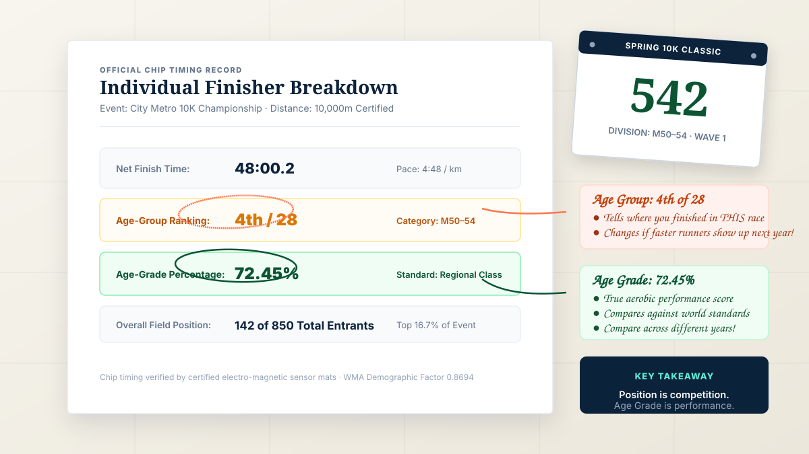
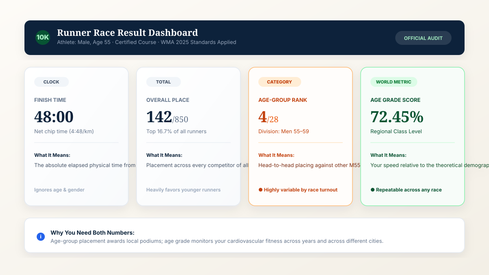
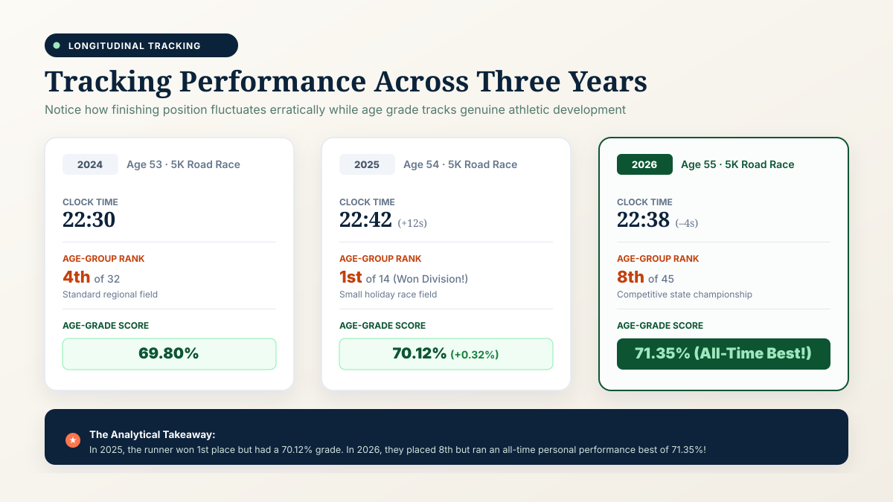

Direct Answer: Are Age-Group Results and Age-Grade Percentages the Same?
No. They measure completely different aspects of athletic performance.
An age-group result measures your relative finishing position against the specific competitors in your age bracket who ran in that particular event on that specific day (e.g., placing 5th out of 35 men in the 50–54 division). An age-graded result measures your demographic athletic speed compared against an objective statistical world-record reference standard for your exact age and sex, expressed as a standardized percentage (e.g., 74.25%).
Because an age-group ranking depends entirely on who registered for the race, your position can swing wildly between local 5Ks and national championships. In contrast, your age grade evaluates your physical speed independently of other entrants. Want to calculate your official percentage right now? Use our verified Age Grading Calculator.
Age-Group Result
Core Question: "Where did I finish compared with other runners in my age category today?"
Evaluates competitive tactics, field strategy, and relative standing against other participants on the race course.
Age-Graded Result
Core Question: "How did my performance compare with an applicable age-based world standard?"
Evaluates cardiovascular efficiency and net pace against certified World Masters Athletics (WMA) demographic benchmarks.
What Is an Age-Group Result?
An age-group result tells you where you crossed the finish line among runners in your specific demographic division at an organized event. In road racing, event directors customarily partition the field into five-year brackets (such as M40–44, W40–44, M45–49, W45–49, M50–54, etc.) to ensure that competitors are recognized alongside peers of roughly comparable physiological life stages.
For example, suppose you enter a certified 10K road race that attracts 35 runners in the Male 50–54 division. If you record the 5th fastest chip time among those 35 individuals, your age-group result is published as:
5th Place of 35 Entrants (M50–54)
This result is strictly relative. If three collegiate runners turned 50 that week and registered for the race, your position drops to 8th—even if you run the fastest time of your life. Conversely, if bad weather keeps faster runners at home, you could finish 1st place in the division with a sluggish clock time.
What Is an Age-Graded Result?
An age-graded result uses an age-adjusted reference standard to evaluate a race performance in an absolute, objective context. Rather than comparing you to whoever happened to pay the entry fee that morning, age grading mathematically scales your net finish time against the theoretical world-record capability for an individual of your exact chronological age and biological sex.
The result appears as a percentage scale:
Age Grade: 72.45% (Regional Class Level)
The exact calculation derives from certified tables published by World Masters Athletics (WMA) and USA Track & Field (USATF). If you ran that same 10K in 48:00 at age 55, your age grade is 72.45% whether 5 runners showed up or 50,000 runners packed the starting corrals. For the complete mathematical formula, WMA coefficient derivations, and division models, consult our technical guide: How Is Age Grade Calculated? Formula, Examples & Guide.
Age Grade vs Age Group: Quick Comparison
The following comparison table highlights how these two metrics function side by side across real-world competitive and analytical racing scenarios:
| Feature / Dimension | Age-Group Result | Age-Graded Result |
|---|---|---|
| Main Purpose | Show position among competitors in that event | Compare performance against an age-based world standard |
| Depends on Race Participants? | Yes (whoever entered and ran that day) | No (independent of other participants) |
| Depends on Age? | Yes (places you in a 5-year bracket) | Yes (uses your exact single-year age) |
| Depends on Race Time? | Yes (finishing order ranks net chip times) | Yes (pace directly drives the percentage score) |
| Produces a Percentage? | Usually no (outputs ordinal rank, e.g. 3rd of 42) | Yes (outputs standard percentage, e.g. 74.5%) |
| Changes Based on Who Entered? | Yes (tough fields lower your position) | No (same time produces identical grade) |
| Useful for Long-Term Self Comparison? | Limited (race fields differ constantly) | Highly Useful (tracks true biological conditioning) |
| Useful for Podium & Award Rankings? | Primary standard for medals and trophies | Secondary standard (used for overall master awards) |
Important note: While an age grade is independent of other competitors, it still depends on certified distance measurement, course topography, weather, and the specific table edition used (e.g. WMA 2025 vs 2015 tables).

How Does an Age-Group Ranking Work?
Age-group scoring follows a straightforward three-step logistical process administered by race timing chips and electronic RFID transponder mats:
- Division Assignment: When you register, your birth date places you into an age division (most commonly in 5-year clusters: 35–39, 40–44, 45–49, 50–54, 55–59, 60–64, etc.).
- Chip Time Sorting: As runners cross the electronic finish timing mats, their net chip times (elapsed duration between crossing the start mat and finish line) are sorted from fastest to slowest.
- Category Filtering: The timer filters out all runners outside your division and assigns ordinal places (1st, 2nd, 3rd, 4th, 5th...) exclusively within that cohort.
Consider an example from a Men's 50–54 division at a competitive regional 10K:
Sample Results: Men 50–54 Division (10K)
1st Place · 38:12
2nd Place · 39:04
3rd Place · 39:31
4th Place · 40:02
5th Place · 40:18 ← Your Finish Time
Your official age-group result is 5th of 35. If the race is held again next year and several elite runners from a neighbouring state decide to attend, running that exact same 40:18 clock time might only earn 11th place. Your physical running performance did not change, but the competition did.
How Does Age Grading Work?
Age grading disregards every other runner on the course. Instead, it measures your performance against a statistically modeled human performance curve established through decades of elite masters running records.
The mathematical pathway operates as follows:
The Age-Graded Calculation Pathway
Exact Age (55) + Sex (Male) + Event (10K) + Net Time (48:00)
↓
WMA Demographic Standard Factor Lookup (31:48 World Benchmark)
↓
Age Grade Percentage: 72.45%
Because the denominator is a fixed world-standard benchmark for a 55-year-old male running 10,000 metres, your result is completely insulated from local race registration dynamics. For an in-depth exploration of performance tiers like 50%, 60%, 70%, 80%, and 90%, see our comprehensive companion article: What Is a Good Age Grade in Running? Age Grade Percentages Explained.
One Race, Three Completely Different Perspectives
How a single 55-year-old athlete's 48-minute 10K generates distinct analytical outcomes:
Pure elapsed duration from start mat to finish mat. Answers: "How fast did my legs move over 10K today?"
Tactical ranking against 27 other local M55 entrants. Answers: "Did I finish near the front of my division today?"
Scientific comparison to the peak human world standard. Answers: "How strong is my aerobic fitness for my age?"
Can You Finish First in Your Age Group but Have a Lower Age Grade?
Yes, absolutely. This is one of the most common paradoxes runners encounter when analyzing their race history. Winning your age group only requires running faster than the handful of runners who showed up in your division that day.
Consider two real-world race scenarios for the same runner:
Field Size: 4 Runners in Division
Finish Time: 23:45
Age-Group Result: 1st Place (Gold Medal!)
Age-Grade Score: 66.20%
Field Size: 62 Runners in Division
Finish Time: 21:30 (2 min 15 sec faster!)
Age-Group Result: 8th Place (No Podium)
Age-Grade Score: 73.12%
In Race A, the runner took home an age-group trophy despite running a sluggish 23:45. In Race B, the runner delivered a vastly superior physiological performance (21:30, jumping from 66% to 73% age grade), yet finished off the podium in 8th place because the metropolitan field was extraordinarily competitive. If you only look at age-group position, Race A looks like a victory and Race B looks like a defeat. Age grading reveals the reality: Race B was a vastly superior athletic achievement.
Can You Have a High Age Grade but Finish Low in Your Age Group?
Yes. This scenario frequently occurs at major marathons (such as Boston, London, Chicago, or Berlin) and national masters road championships. These events attract the deepest concentration of elite masters athletes in the world.
A 50-year-old woman running a 3:15:00 marathon scores an outstanding age grade of over 80.5% (National Class Level). At a regional community marathon, that performance would win the division by 20 minutes. But at the Boston Marathon, where dozens of sub-3:00 masters women compete, a 3:15 finish might place 22nd in the W50 division. Her high age grade objectively validates her national-class conditioning, even while her age-group rank is 22nd.
Why Age-Group Results Change From Race to Race
Because age-group ranking is a comparative ranking system, your final placement fluctuates due to numerous external factors that have nothing to do with your personal physical fitness:
- Turnout & Field Size: A division with 8 runners offers a much higher statistical chance of a top-3 podium than a division with 85 runners.
- Local Demographic Depth: Races held near university campuses or collegiate towns often have hyper-competitive masters brackets staffed by former varsity runners.
- Event Stature & Prize Money: National championships and prize-purse races pull national-class talent, drastically compressing the top of the division.
- Weather & Course Terrain: Hilly courses and high humidity slow everyone down, altering finishing spreads and pack dynamics.
- Division Age Boundaries: If you are 54 competing in the 50–54 bracket, you are competing against runners four years younger. Next year, when you turn 55 and enter the 55–59 bracket, you suddenly become the youngest runner in the division.
Why Age Grade Can Be Useful for Comparing Your Own Results
When tracking your athletic development across multiple racing seasons, age-group position is notoriously noisy. Winning 2nd place in April, 6th place in July, and 1st place in October tells you almost nothing about whether your VO2 max, lactate threshold, or running economy are improving.
Age grading provides an objective baseline. By converting every race time into a percentage of demographic peak capacity, it creates a common denominator. If your 5K age grade rises from 64.2% to 67.8% over an eight-month training block, you have unequivocal evidence of aerobic progression—regardless of whether you finished 3rd or 13th in your age bracket.
Age Grade vs Personal Best
Every runner cherishes their lifetime personal best (PR). However, comparing a lifetime PR to an age-graded result involves different timelines and goals:
| Metric | Core Question | Longevity Application |
|---|---|---|
| Personal Best (Clock PR) | "What is the fastest clock time I have ever run in my entire life?" | Fixed historical benchmark; increasingly unobtainable as runners age past their late 30s. |
| Age-Group Position | "Where did I finish against my competitors today?" | Real-time tactical feedback on race day; determines event podiums and division medals. |
| Age-Graded Percentage | "How close did I perform relative to my biological potential at my current age?" | Evergreen, renewable performance metric; allows runners in their 40s, 50s, 60s, and 70s to set new personal bests. |
For runners who first took up running in their 40s or 50s, tracking both clock PRs and age-graded PRs offers powerful motivation. For runners with youthful collegiate PRs, age grading provides a realistic, scientifically grounded way to measure excellence in second-half athletic careers.
Which Metric Should You Look At?
Rather than choosing one metric as superior, effective athletic analysis pairs each number with its rightful purpose:
- Look at Age-Group Position when you want to know how you stacked up against the local racing community, whether you qualified for division hardware, or how tactical race decisions paid off on the course.
- Look at Age Grade when you want to evaluate your true cardiovascular conditioning, benchmark a race against international standards, compare results across disparate age brackets, or track fitness across multiple racing years.
- Look at Net Clock Time when evaluating pacing splits, assessing weather and hill penalties on a specific course, or planning training intervals.
Age Group vs Age Grade for Masters Runners
For masters athletes (aged 35 and older), the distinction between these two metrics becomes essential for long-term psychological sustainability. As explored extensively in our dedicated guide, Age Grading for Masters Runners: How It Works & Benefits, biological aging imposes progressive declines in aerobic capacity, maximal heart rate, and tendon elasticity.
Relying exclusively on age-group ranking can be deceptive. A masters runner who shifts into a newly age-bracketed category (e.g., turning 60 and entering M60–64) will frequently see their age-group ranking artificially jump from 15th to 2nd simply because fewer people compete in the older division. Age grading strips away this bracket effect, revealing whether the runner's underlying pace actually improved or merely benefited from demographic attrition.
Does Race Distance Matter?
Yes. Both age-group rankings and age grades are highly event-specific.
A runner might achieve an age grade of 74% in a 5K, but only manage 68% in a full marathon. This gap does not represent an error in the tables; it reflects the runner's specific physiological training profile. A runner with high natural fast-twitch turnover who trains primarily for short races will naturally index higher on 5K benchmarks than on the prolonged endurance demands of 42.2 kilometres. To see how demographic standards evaluate 5,000-meter times, see our focused guide: 5K Age Grading Explained: How to Calculate Your Age Grade.
Similarly, age-group competition varies dramatically by distance. Shorter community 5K and 10K events frequently attract casual weekend participants, spreading the field thin. Half marathons and full marathons demand structured months-long training blocks, meaning those who reach the starting line represent a much more conditioned demographic cohort.

How to Read Your Race Results
When you navigate to an official race timing portal after completing an event, you will typically encounter a finisher row structured like this:
48:00
142 / 850
4 / 28
72.45%
- 48:00: Your net chip finish time. This represents the real-world physical duration from start to finish.
- 142 / 850: Your absolute finishing rank among every runner who crossed the finish line, regardless of age or gender (top 16.7% of the entire race).
- 4 / 28: Your age-group position. Out of 28 men in your 5-year age division, only 3 finished faster than you today.
- 72.45%: Your age grade. Based on the 2025 World Masters Athletics standard for a 55-year-old male running 10K, your speed reached 72.45% of the theoretical world record capability, placing you in the competitive Regional Class tier.
How to Calculate Your Age Grade
If your race timing sheet only published your clock time and age-group position, calculating your official age grade requires four verified inputs:
- Age on race day: Your exact chronological age on the date the event occurred.
- Biological sex: Male or female (as defined in World Athletics demographic tables).
- Certified race distance: Standard distances like 5K (5,000m), 10K (10,000m), half marathon (21,097.5m), or marathon (42,195m).
- Net chip finish time: Hours, minutes, and seconds.
To eliminate manual arithmetic and factor lookups, enter your numbers into our Age Grading Calculator to view your exact percentage and equivalent open-division standard in seconds.

How to Track Both Metrics Over Time
To establish a meaningful athletic training journal, we recommend recording both your age-group finish and your age-graded score alongside your raw clock times. Here is how a practical multi-year training log looks in practice:
| Race Date & Year | Event | Net Finish Time | Age-Group Finish | Age Grade (%) | Analytical Context |
|---|---|---|---|---|---|
| October 2024 | 5K Autumn Classic | 22:30 | 4th of 32 | 69.80% | Strong local field; baseline fitness. |
| October 2025 | 5K Holiday Dash | 22:42 (+12s) | 1st of 14 (Won!) | 70.12% (+0.32%) | Clock time slowed slightly, but age grade improved due to aging; won division due to light turnout. |
| October 2026 | 5K State Championship | 22:38 (–4s) | 8th of 45 | 71.35% (PR!) | Finished 8th in elite state field, but posted all-time highest demographic performance score. |
Notice the revelation in this log: In 2025, the runner took home a gold medal with a 70.12% grade. In 2026, they finished 8th off the podium, yet ran an all-time personal fitness record of 71.35%! Tracking both metrics prevents runners from feeling discouraged when competing against deep fields.
Limitations of Age-Group Results
While age-group results provide immediate race-day excitement and determine podium awards, they carry significant analytical limitations:
- Extreme Field Volatility: You cannot control who registers. One or two elite runners entering your bracket completely reshuffles your outcome.
- Arbitrary Age Boundaries: Turning 49 makes you the oldest runner in the 45–49 bracket; turning 50 immediately places you at the top of the 50–54 bracket.
- Small Sample Sizes: In rural or small club races, an age bracket may contain only 2 or 3 runners, making a top-3 podium finish trivial.
- Lack of Cross-Race Comparison: Placing 3rd at a local park 5K is in no way equivalent to placing 3rd at a major city marathon.
Limitations of Age-Graded Results
Age grading is the superior tool for scientific performance tracking, but runners should remain aware of its methodological limitations:
- Dataset Variations: World Masters Athletics updates its statistical tables periodically (e.g. 2015, 2020, and 2025 editions). Comparing a 2015 score against a 2025 score introduces slight calculation drift.
- Course Topography & Weather: Age grading assumes standard sea-level road topography. It cannot factor in steep hills, muddy cross-country footing, high altitude, or gale-force headwinds.
- Not a Medical Fitness Test: An age grade is an athletic speed calculation. It does not measure clinical cardiovascular health, blood lipids, or general medical vitality.
- Distance Outliers: Age grading works best on certified standard distances (5K, 10K, Half, Full Marathon). It is less reliable on ad-hoc trail or obstacle distances.
Frequently Asked Questions
What is the difference between age grade and age group?
Age group refers to your category and finishing position among competitors who ran that day (e.g., 4th of 28 in M50–54). Age grade refers to your performance relative to an objective demographic world standard, expressed as a percentage (e.g., 72.45%).
Is age grade the same as age-group ranking?
No. They measure fundamentally different concepts. Age-group ranking evaluates head-to-head competition within a local field, while age grade evaluates personal aerobic speed against physiological world record benchmarks.
Can I win my age group but have a lower age grade?
Yes. If your race category has only 3 competitors and you win in 24:00, you finish 1st in your age group but may only achieve a 62% age grade. In a larger or faster race, a runner finishing 6th might run 21:00 and score a 72% age grade.
Can I have a high age grade but finish low in my age group?
Yes. At highly competitive events (such as national championships or major city marathons), several national-class runners might register in your division. You could run a superb 82% age grade and still finish 7th or 8th in your category.
Which is more important, age grade or age-group position?
Neither is universally more important; they answer different questions. Age-group position determines podium awards and local standings on race day, while age grade is superior for monitoring personal fitness progression across multiple years.
Does age-group position depend on other runners?
Yes. Your finishing position is completely dependent on who registered, showed up, and completed the course in your age division that morning.
Does age grade depend on other runners?
No, not directly. Your age grade depends solely on your age, sex, certified race distance, net finish time, and the published demographic reference factor. It remains identical whether 5 runners or 5,000 runners participated.
Can I track age grade over multiple years?
Yes. Tracking age grade year-over-year is widely considered the gold standard for masters runners, because it accounts for natural chronological aging and highlights genuine cardiovascular and muscular gains.
How do I calculate my age grade?
You can calculate your age grade instantly by entering your age, sex, event distance, and net finish time into the verified Age Grading Calculator on Age Calculator Lab.
See Your Age-Adjusted Running Performance
Your race position tells you where you finished today. Your age grade provides an objective, enduring way to understand your athletic performance relative to international standards.
Calculate My Age Grade →Methodology & Verification Standards
Age-grade percentage models published across Age Calculator Lab are calculated using certified reference factors developed by World Masters Athletics (WMA) and USA Track & Field (USATF). Reference benchmarks are periodically audited against official world record revisions.
Age-group ranking data reflects official chip-timed results recorded by race directors using certified transponder timing systems. Because local participation, weather conditions, and course certifications vary, age-group standings should be evaluated in the specific context of each event. For full mathematical derivations, see our guide on How Age Grade Is Calculated. For masters runners tracking longevity progression, explore Age Grading for Masters Runners.